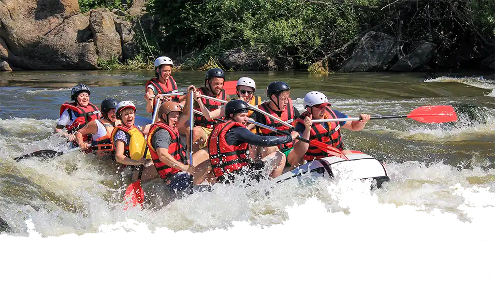

About White Water Rafting Co.
Welcome to our White Water Rafting website! We are passionate about providing thrilling and
unforgettable rafting experiences for adventure enthusiasts of all levels. Whether you're a
seasoned rafter or a beginner looking to try something new, we've got you covered.
Our team of experienced guides is dedicated to ensuring your safety while delivering an
exhilarating adventure on the water. We offer a variety of rafting trips that cater to different skill levels
and preferences, from gentle family-friendly floats to adrenaline-pumping white water rapids.
Explore our website to learn more about our rafting packages, safety measures, and the
breathtaking locations we operate in. Don't forget to check out our gallery for stunning photos and videos
from past trips!
The History of Whitewater Rafting
Origins
White water rafting has a rich history that dates back to the mid-19th century. The sport originated
in the United States, particularly in the western regions where rivers with challenging rapids were
abundant.

Modern Era
The modern sport of white water rafting began to take shape in the 1950s and 1960s when inflatable
rafts became more widely available. Today, it is a well-established adventure sport worldwide with thousands
of outfitters serving adventure seekers.